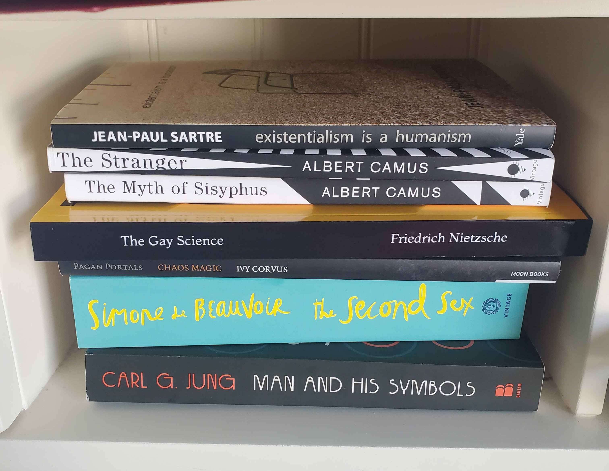

While watching Adam I also got a bunch of new books!

As stated before, I'm trying to be more in touch with my spiritual side, and part of that also means building a little bit more of a robust familiarity with certain philosophies and psychological works that interest me.
In particular, right now I'm rather drawn to atheist existentialism, the works of Carl Jung, and maybeeee Chaos Magic? Idk about that last one. We're gonna find out.
Maybe I'll make a new section of my journal that's for book reviews/reflections. That sounds fun.
If I do I'll do that later though, I'm tired now. Bye bye!